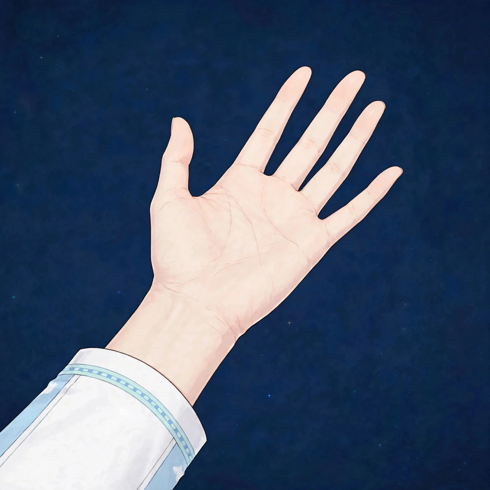
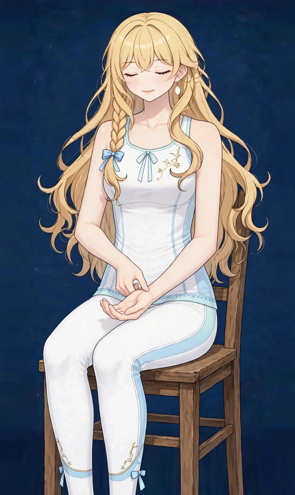

梅田で自律神経の乱れ感ケア｜緊張が抜けない・切り替えが難しい方に心身・女性特有
仕事中はずっと気が張っていて、帰宅しても頭が休まらない。季節の変わり目や忙しさが重なると、なんとなく調子が安定しない——そうした「自律神経の乱れ」を感じる方は多くいらっしゃいます。強い症状がある場合は医療機関への受診をおすすめします。
緊張が抜けない状態はどんな状態か
「自律神経の乱れ感」とは、仕事中はずっと気が張っていて、帰宅しても頭が休まらない、オンとオフの切り替えが難しい、といった感覚をまとめて表す言葉です。当店は医療機関ではなく、この言葉は診断名としてではなく、日々のコンディションの波を表す一般的な表現として使っています。
体は活動モードと休息モードを切り替えながら一日を過ごしています。忙しさや緊張が長く続くと、休息モードに入りにくくなり、肩や背中の力み、眠りの浅さ、だるさなどがセットで表れやすくなります。波があること自体は自然なことであり、大切なのは「切り替えのきっかけ」を生活の中に持つことです。
こんなサインはありませんか？ — 自律神経の乱れ感のチェックリスト
- 仕事が終わっても頭が休まらない
- 季節の変わり目に調子が安定しない
- 肩や背中に力が入り続けている
- オンとオフの切り替えが難しい
- 休日も仕事のことが頭から離れない
- 夕方になっても肩の力が抜けない感じがある
- 寝つきが悪く、考え事で目が覚める日がある
- 気候や予定の変化で調子が大きく揺れる
当てはまる項目が多いほど、負担がたまりやすい生活が続いている可能性があります。次の「要因」と見比べて、どこに負担が集まっているか確かめてみてください。
自律神経の乱れ感につながりやすい要因
- 緊張の続く働き方：集中や気遣いが途切れない働き方では、体は活動モードのまま固定されやすくなります。休憩を取っていても、頭が休まっていない感覚が残ることがあります。
- 切り替えの儀式がない一日：通勤や帰宅といった区切りが曖昧になると、一日の終わりが分からなくなります。在宅ワーク中心の方に多い背景です。
- 睡眠のリズムの乱れ：就寝時刻のばらつき、寝る前の画面、休日の寝だめなどは、一日のリズムをずらし、切り替えにくさにつながります。
- 季節と気候の変化：気温や気圧、日照時間の変化が大きい時期は、体が調整に力を使いやすく、調子の波を感じやすい時期です。
- カフェインや刺激の多い生活：夕方以降のカフェインや、夜遅くまでの明るい画面は、休息モードへの切り替えを妨げることがあります。
- 呼吸の浅さと姿勢：緊張が続くと呼吸は浅くなり、胸や肩に力が入った姿勢が固定されやすくなります。体の力みが、気持ちの切り替えにくさと連動する面もあります。
図1｜緊張が残りやすい体の部位（前面）

東洋医学から見た考え方
東洋医学では、こうした状態も気・血・水の巡りのバランスの崩れとして捉えます。張りつめた状態が続く方には、呼吸が深まるようなゆったりした圧とリズムで、体が力を抜ける時間を作ることを大切にします。
見立てでは、心身の安定と関わる心経や心包経、巡りの滞りと関わる肝経、体の切り替えと関連づけられる陰維脈や陽蹻脈などが関連づけられます。施術では、呼吸が深まるようなゆったりした圧とリズムで、体が力を抜ける時間を作ることを大切にしています。
代表的なツボ
切り替えのきっかけとして、ご自宅でも触れやすいツボを紹介します。どれも手や脚にあるため、仕事の合間にも行いやすい場所です。深呼吸とセットで行うのがおすすめです。
位置：手首の内側のシワから、指3本分ほどひじ寄り、2本の腱の間。押し方：反対側の親指でゆっくり押しながら、ゆっくり息を吐きます。気持ちの落ち着きと関連づけて挙げられる代表的なツボです。
図2｜手首にある代表的なツボの位置

おすすめ施術
オイルマッサージ
一定のリズムで全身をほぐし、特に首・肩・背中の緊張を丁寧にケアします。施術中は会話少なめで静かに過ごすこともできます。
進め方は、一定のリズムで全身をほぐし、特に首・肩・背中の緊張を丁寧に緩めていく流れです。強い刺激で一気にほぐすより、呼吸が深まっていくペースに合わせた圧を心がけています。施術中は会話少なめで静かに過ごすこともできます。
部屋の明るさや香りも含め、「切り替えの時間」として使っていただける環境を整えています。施術後はすぐに予定を詰め込まず、温かい飲み物でゆっくりしてお帰りください。
自宅でできるセルフケア
セルフケアの中心は、一日の中に「切り替えのきっかけ」を作ることです。体のケアと生活の区切りをセットで取り入れてみてください。
- 1．帰宅前の深呼吸仕事終わり、帰宅前に一度立ち止まり、内関を押しながらゆっくり深呼吸を3回。場所を変えて区切りを作るだけでも、頭の切り替えのきっかけになります。
- 2．就寝前の神門ほぐし布団に入る前に、手首の神門を小さく円を描くようにほぐします。画面を置いて行うことで、眠りへの切り替えの合図になります。
- 3．朝の光と起床時刻の固定朝は光を浴びて一日のリズムの起点を作ります。休日も起床時刻を大きくずらさないことが、夜の切り替えのしやすさにつながります。
- 4．夕方以降の刺激を減らす夕方以降はカフェインを控えめにし、就寝1時間前は画面の明るさを落とす工夫を。切り替えにくい日の前ほど意識してみてください。
図3｜セルフケア「内関を押しながらの深呼吸」の手順

場面別の注意
在宅ワークの日
仕事と生活の区切りが曖昧な日は、終わりの儀式を決めておくことが助けになります。散歩、入浴、着替えなど、小さな区切りで構いません。
季節の変わり目
調子の波が出やすい時期は、予定を詰め込まず、就寝と起床のリズムを守ることを優先してください。波がある時期だと知っておくだけでも、過ごし方が変わります。
忙しい週の終わり
緊張が抜けないまま週末に入ると、休んでも回復しにくくなります。週末の初めに一度、体をほぐして切り替える時間を作ってみてください。
受診の目安
次のような場合は、サロンでのケアの前に医療機関への受診をおすすめします。
- 動悸、息苦しさ、胸の痛みを伴っている
- 眠れない日が長く続き、日中の生活に支障が出ている
- 気分の落ち込みや不安が強く、長く続いている
- 体重の急な変化や発熱を伴っている
- 症状が悪化していく感じがある
当店は医療機関ではなく、診断は行いません。迷うときは、まずかかりつけの医療機関にご相談ください。
よくある質問
Q．「自律神経の乱れ」と診断されたわけではないのですが、相談できますか？
はい。当店は医療機関ではなく、診断や治療は行いません。「緊張が抜けない」「切り替えが難しい」といった日々の感覚のケアとしてご利用いただけます。強い症状がある場合は、医療機関への相談もあわせてご検討ください。
Q．施術中は静かに過ごせますか？
はい。会話少なめで静かに過ごすこともできます。施術前の確認だけ済ませれば、あとは眠ってしまっても大丈夫です。
Q．夜遅い時間でも受けられますか？
営業時間は月〜土の17:00〜22:00です。仕事終わりの切り替えの時間として使われる方が多い時間帯です。完全予約制のため、LINEで希望日時をお知らせください。
Q．眠りの浅さも一緒に相談できますか？
はい。切り替えにくさと眠りの浅さはつながりが深いお悩みです。関連ページの眠りの浅さもあわせてご覧ください。90分の組み立ては当日の状態で調整します。
関連するお悩みページ
関連する経絡ページ
ご予約
ステラポラリス（大阪・梅田／女性専用）｜オイルマッサージ 90分 10,000円｜月〜土 17:00〜22:00・完全予約制
ご予約はLINE公式アカウントで受け付けています。希望の日時と、気になる場所を送ってください。